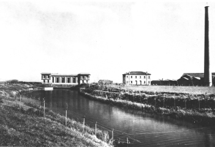
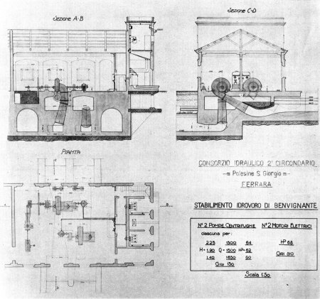
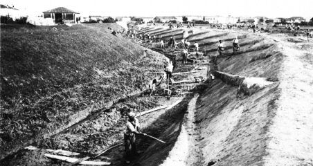
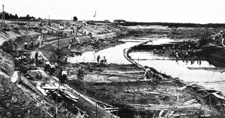
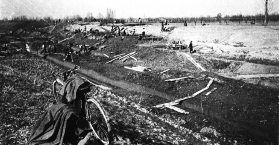

| Le Bonifiche Ferraresi Profilo ambientale A partire dal 1872 iniziarono le opere di bonifica idraulica della parte orientale della provincia di Ferrara; e di conseguenza negli anni successivi vennero convertite allo sfruttamento agricolo nuove estensioni di terre, che prima producevano solo canna palustre e foraggi. |
|
 |
Tanto per dare un'idea della portata di tali bonifiche
basta ricordare che la superficie adibita a valli da canna o da pesca
era di circa 95.000 ettari nel 1835 ridotta a 73000 nel 1875 e 55000 nel
1930.
Le bonifiche nel I° e II° circondario, furono
caratterizzate dal prosciugamento meccanico, l'unico che poteva garantire
una sistemazione territoriale permanente anche di quelle terre il cui
livello altimetrico è di poco superiore o inferiore a quello
del mare (e questo è il motivo che aveva vanificato le bonifiche
dei secoli passati). |
| Il prosciugamento meccanico poteva attuarsi
solo con l'utilizzo delle macchine a vapore collegate al funzionamento
degli impianti idrovori per il pompaggio delle acque.
Tali lavori richiedevano l'impiego di enormi capitali e si ebbe così la creazione di Società miste di capitali privati e di banche. La Società Bonifica Terreni Ferraresi (SBTF) aveva acquistato nel 1872 oltre 15000 ettari di valli da bonificare ed il primo grande impegno consistette nella costruzione dell'impianto Idrovoro di Codigoro che entrò in funzione nel 1874 e verso cui erano convogliate le acque di scolo del Comprensorio a nord del Volano. Nel basso ferrarese anche i proprietari terrieri del II° circondario del Polesine di S.Giorgio, decisero di intraprendere la strada del prosciugamento meccanico; fu scelto di non concentrare lo sforzo di sollevamento delle acque in un solo grande impianto idrovoro ma di dare vita a 9 piccole bonifiche, ognuna delle quali servita da un impianto: |
|
 |
Denore, Tresigallo, Bevilacqua, Martinella, Trava,
Benvignante (costruito nel 1891 controlla lo scolo della Fossa
Benvignante e Ziparea; modificato nel 1923, 1933, 1955) Sabbiosola
(costruito nel 1891 e modificato nel 1913 e 1933), Montesanto
(costruito nel 1891 e modificato nel 1915 e nel 1932), Campocieco.
Per motivi più di carattere sociale che idraulico, attorno al 1920 iniziarono le bonifiche che portarono a prosciugare le valli Pega, Zavelea, Rillo e Ponti e alla metà degli anni sessanta fu sottoposta a bonifica la grande valle del Mezzano (oltre 20.000 ettari) che prima raccoglieva le acque di scolo dell'intero comprensorio del Polesine di S.Giorgio e che veniva utilizzata come valle da pesca. |
Profilo sociale
Sulla stampa di quegli anni, non solo quella radicale ma anche quella conservatrice, si trovò spesso la richiesta al governo di lavori pubblici per evitare pericolose rivolte dovute alla disoccupazione. |
|
| Molti contadini cui erano state affittate le terre di
bonifica si trovarono nella impossibilità di pagare gli affitti
e di avere un guadagno in quanto tali terreni non avevano inizialmente
delle rese sufficienti ed in molti casi la carenza di opere complementari
alle bonifiche (manutenzione canali ed argini, strade, case, stalle, rete
fognaria ed acquedotti) resero difficili le condizioni di vita in tali
poderi; si assistette perciò ad un diffuso fenomeno di riduzione
di questa categoria di lavoratori che andarono ad ingrossare le fila dei
braccianti. |
 |
 |
I lavori di bonifica avevano già richiamato migliaia di braccianti dalle zone limitrofe e quando, negli anni ottanta, si avviarono a conclusione tali opere, la grande massa di braccianti si trovò a fare i conti con una situazione di sottoccupazione che divenne sempre più grave; alla forte richiesta di manodopera nel periodo estivo corrispondeva un lungo periodo di disoccupazione dall'autunno alla primavera per risolvere la quale non risultavano sufficienti nemmeno i lavori di completamento delle bonifiche ed altre opere pubbliche (strade, reti fognarie, ferrovie) che lo Stato concedeva. |
| Da parte operaia vi furono, sul finire del
secolo, i primi tentativi di risolvere questa situazione di immiserimento,
attraverso la richiesta di aumenti salariali e la formazione di compagnie
di braccianti che cercavano di ottenere l'appalto dei lavori pubblici
sottraendosi in tal modo allo sfruttamento degli appaltatori che si trattenevano
oltre la metà del guadagno. Sulla stampa di quegli anni, non solo quella radicale ma anche quella conservatrice, si trovò spesso la richiesta al governo di lavori pubblici per evitare pericolose rivolte dovute alla disoccupazione. |
|
| Nel 1897 nel ferrarese si ebbero agitazioni
contadine e scioperi che portarono ad una revisione dei rapporti tra proprietari
e lavoratori codificata in un contratto agrario: il patto di boaria ferrarese;
tale contratto introduceva una novità sostanziale e cioè
il salario in denaro che significava la perdita di quei privilegi goduti
fino a quel momento.
La proletarizzazione dei boari li portò ad avvicinarsi, all'inizio del secolo, alle lotte degli altri salariati agricoli ed agli scioperi, per ottenere miglioramenti non solo salariali ma anche delle condizioni generali di vita. |
 |
Estratto dal sito del Comune di Portomaggiore (FE). Per saperne di più.